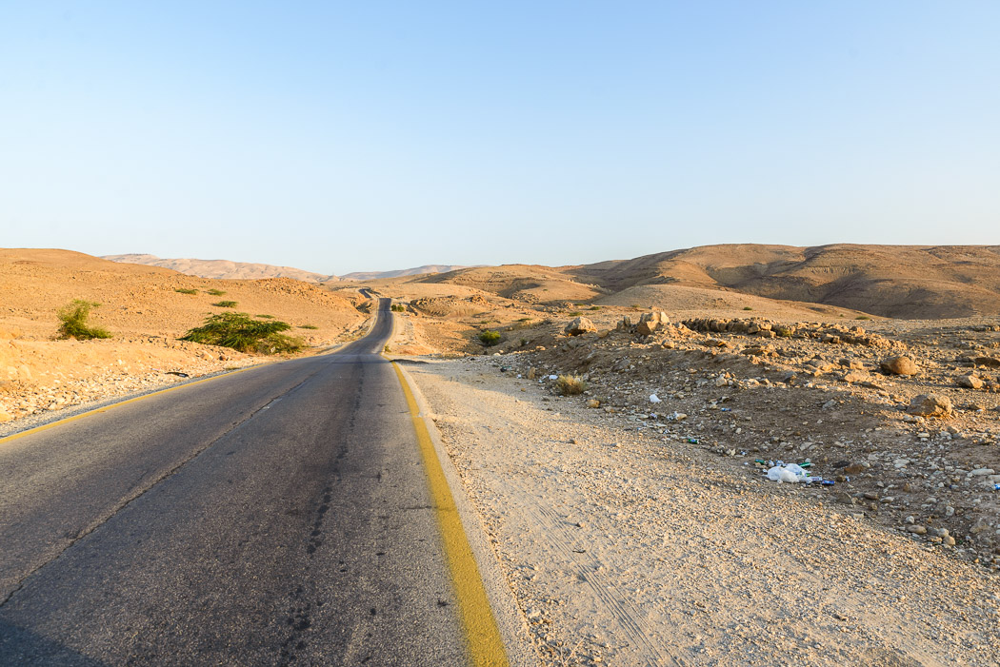
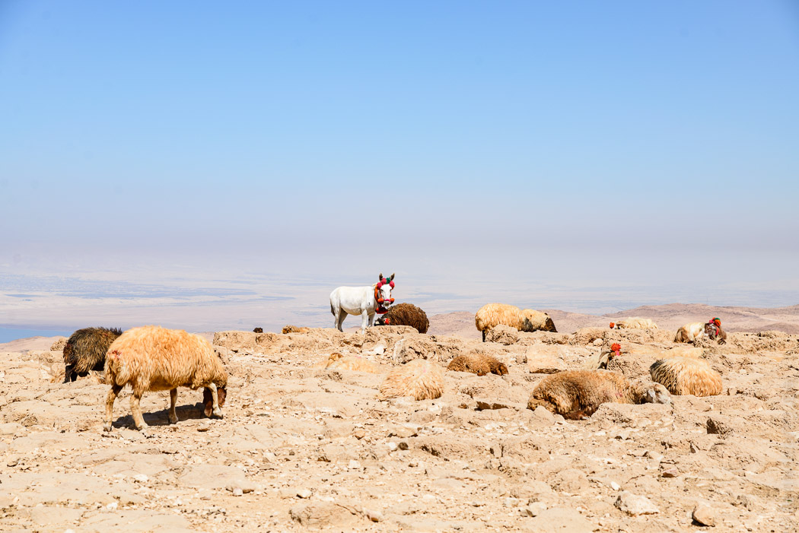

02/10/2016
Rückweg
Gut durchgeröstet und entspannt machen wir uns auf den Heimweg. Wir nehmen die echte Autobahn (nicht den King's Highway) nach Madaba. Die Strecke ist ziemlich langweilig, aber man kommt gut durch, wenn man auf die gemeingefährlichen Verkehrshubbel achtet. Dass es auf der Autobahn nicht so hilfreich ist, immer wieder auf Schritttempo abbremsen zu müssen, hat ein übler Auffahrunfall gezeigt, der direkt neben uns passiert ist.
Trotz des gefühlt rapide abnehmendem Fahrvermögen der Autos um uns herum erreichen wir sicher Madaba. Dort hat das "Black Iris Hotel" wieder offen, das auf unserem Hinweg wegen Urlaub (eigentlich Unterbeschäftigung) geschlossen war. Das Hotel ist schon recht alt, aber gut gepflegt. Der nette Besitzer hätte viele gute Ratschläge auf Lager gehabt.
Nach einem letzten Fladenbrot-Frühstück, brechen wir zum Flughafen auf. Die Brachen vor Madaba liegen unter einer Müllschicht in biblischer Verwahrlosung. Das Gegenlicht der aufgehenden Morgensonne erzeugt eine apokalyptische Szenerie: Die Welt in 50 Jahren, kein Wasser, verdorrte Felder, Hirten bringen ihre Schafherde zwischen Müllbergen durch, im Hintergrund ziehen Trucks meterhohe Staubfahnen hinter sich her. Der moderne Flughafen bringt uns in die gesichtslos internationale Gegenwart zurück.
